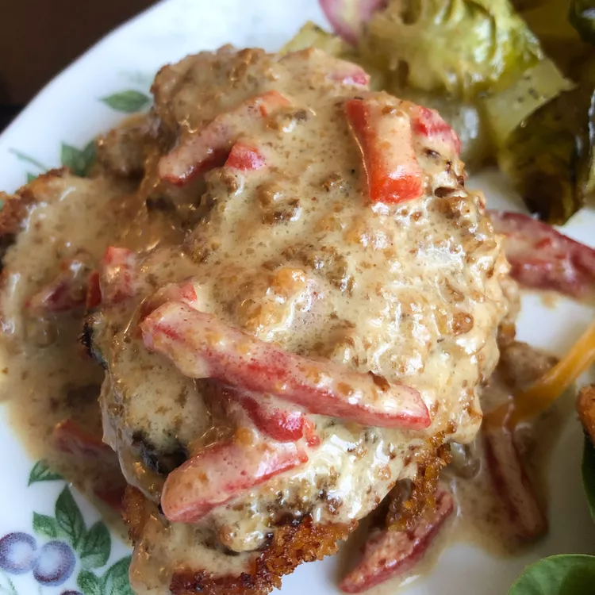

Chicken in Cream Basil

Description
This meal is quick and easy to replicate on a nightly basis (or even mid-day) as it should take 30 minutes total to complete start to finish.
By the end of this recipe, you should have a creamy basil chicken that you can top on pasta, or other things for up to four people!
Ingredients
- 1/4 cup milk
- 1/4 cup dried bread crumbs
- 4 skinless, boneless, chicken breasts
- 3 tablespoons butter
- 1/2 cup chicken broth
- 1 cup heavy whipping cream
- 4 ounce of sliced pimento peppers (drained)
- 1/2 cup grated parmesan cheese
- 1/4 cup chopped fresh basil
- 1/8 teaspoon ground black pepper
Steps
- Place milk and bread crumbs in separate, shallow bowls. In skillet, heat butter or margarine to medium heat.
Dip chicken in milk, then coat with crumbs. Cook in butter or margarine, on both sides, until juices run clear (about 10 minutes).
Remove and keep warm.
- Add broth to skillet. Bring to a boil over medium heat, and stir to loosen browned bits from pan.
Stir in cream and pimentos; boil and stir for 1 minute. Reduce heat.
-
Add Parmesan cheese, basil and pepper. Stir sauce and cook until heated through. Pour mixture over chicken and serve!
Nutrition Facts (per serving)
Calories: 496
Fat: 36g
Carbs: 9g
Protein: 34g
Credit
Website to recipe